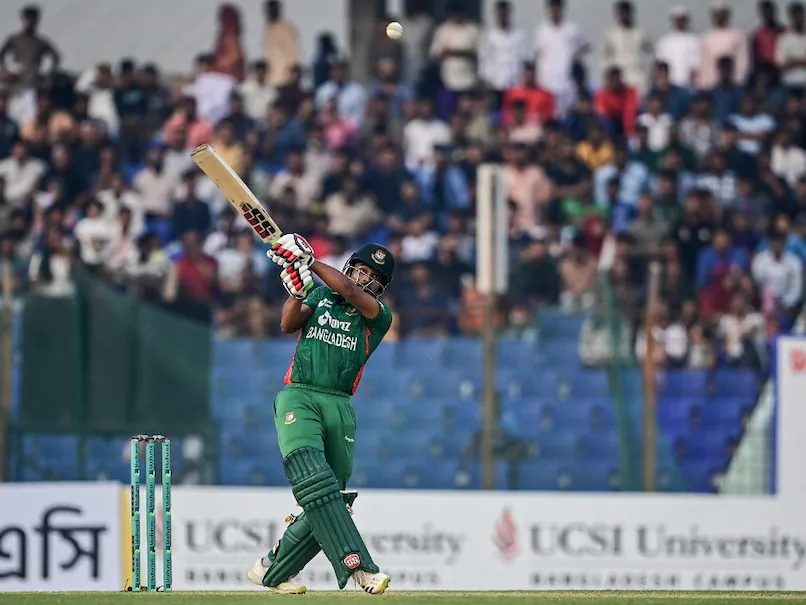

Bangladesh has claimed their first t20 win against England
Date: 11 March 2023
Last thursday The host side Bangladesh claimed their first t20 victory against the world champion England at Jahur Ahmed Chowdhury stadium at Chottogram. Bangladesh skipper Shakib Al Hasan won the toss and sent England to bat first. English openers were playing really well and built the partnaship of 80 runs. Nasum Ahmed got the wicket of Phil Salt at 9.6 overs.Then the skipper Shakib Al Hasan sent Malan to the pavilion at 11.5 overs. England was 88-2 at 11.5 overs. Then the skipper Jos Buttler played aggresively and built a 47 run partnaship in 25 balls with Ben Ducket. Then Mustafizur bowlded Ben Ducket and Hasan Mahmood got Jos Buttler at 67.At that point England was 135-4 in 16.1 overs. Then the Bangladeshi pace bowlers bowled really well and managed to concede only 21 runs in last 4 overs. So England's final score was 156-6 in their 20 overs. Bangladesh had a very chaseable target after the first inings.
Bangladesh started to play aggressively from the very biginning of their inings.They managed to score 43 runs in first five overs of the inings. Both openers Rony Talukdar and Liton Das deperted after playing little cameos. Najmul Hasan Shanto played really well and managed to score 51 in just 30 deliveries before he got out by Mark Wood. Towhid Hridoy supported him really well and departed after scoring 24 runs in 17 balls. At that point Bangladesh was 112-4 in 12.2 overs. Then The skipper Shakib Al Hasan and Afif Hossain safely secured the victory with 2 overs left of the inings.